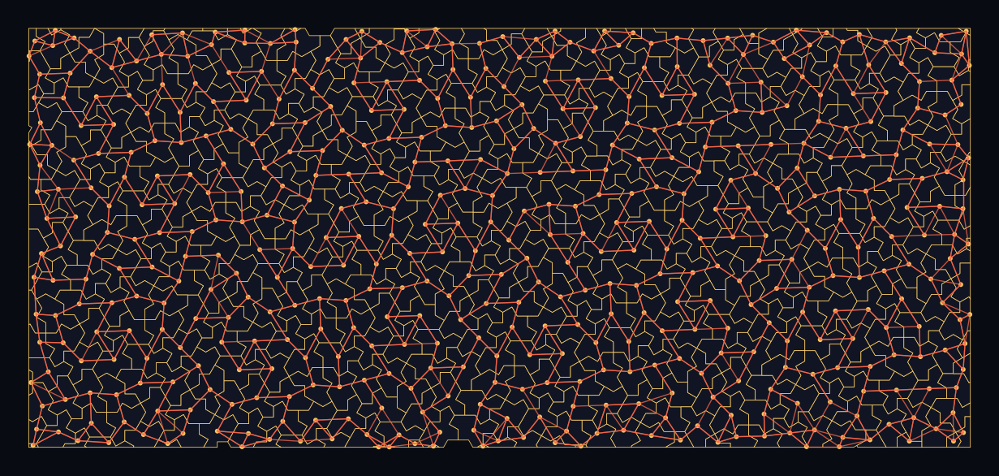

Algorithms and machine learning
Structured non-repeating benchmark geometry for spatial algorithms and geometric ML.
A benchmark that cannot be memorized
Machine learning systems exploit repetition; aperiodic monotile geometry is repetition-proof by theorem. Because every patch regenerates exactly from stable IDs and transforms, it makes an unusual benchmark input: structured enough to learn on, impossible to memorize globally, and perfectly reproducible.[2] Monotiles are also nearly absent from pre-2023 training corpora, which makes them a probe for how models handle genuinely novel geometric structure.

The theoretical backdrop is rich. Tiling problems sit at the edge of computability — translational tiling is undecidable with three tiles,[24] and the structured-vs-wild dichotomy is an open research program.[23] On the constructive side, SAT solvers detect isohedral polyforms,[17] exact algorithms extract tessellation generators from data,[25] and group-theoretic formulations connect tilings to algebra.[9] Percolation thresholds on Hat-family lattices are now being mapped by Monte Carlo simulation,[52] giving concrete statistical signatures for random-process models on monotile graphs. Batle and Bednorz extend Li–Boyle quantum error-correcting codes to Hat and Spectre tilings, grounding recoverability in the supertile hierarchy and CAP torus parametrization.[55]
Experiment directions
- Spatial indexing, nearest-neighbor search, graph embeddings, and geometric hashing over tile adjacency graphs
- Geometric deep learning: equivariant models tested on structure with no translation group
- Procedural benchmarks for SLAM, navigation, and reconstruction (see Robotics)
- Cryptographic experiments — geometric trapdoors and hardness ideas — research-only unless formally reviewed
See also
Robotics and mobility, Signal processing and imaging
Categories: Research frontiers